A computer monitor is an output device that displays information in pictorial or text form. A monitor usually comprises a visual display, some circuitry, a casing, and a power supply. The display device in modern monitors is typically a thin film transistor liquid crystal display (TFT-LCD) with LED backlighting having replaced cold-cathode fluorescent lamp (CCFL) backlighting. Previous monitors used a cathode ray tube (CRT) and some Plasma (also called Gas-Plasma) displays. Monitors are connected to the computer via VGA, Digital Visual Interface (DVI), HDMI, DisplayPort, USB-C, low-voltage differential signaling (LVDS) or other proprietary connectors and signals.
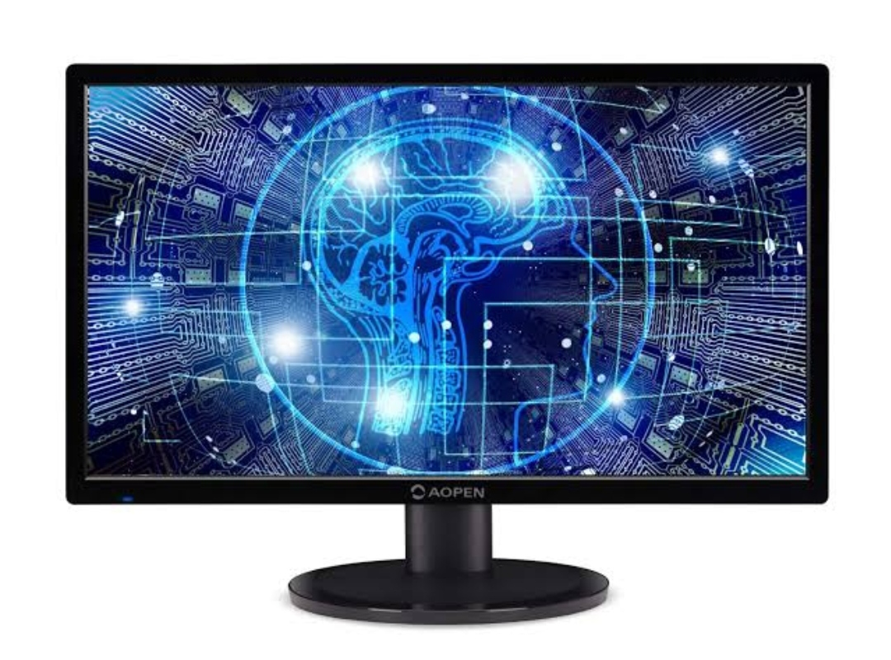
A cathode-ray tube (CRT) computer monitor
Originally, computer monitors were used for data processing while television sets were used for entertainment. From the 1980s onwards, computers (and their monitors) have been used for both data processing and entertainment, while televisions have implemented some computer functionality. The common aspect ratio of televisions, and computer monitors, has changed from 4:3 to 16:10, to 16:9
Modern computer monitors are easily interchangeable with conventional television sets and vice versa. However, as computer monitors do not necessarily include integrated speakers nor TV tuners (such as digital television adapters), it may not be possible to use a computer monitor as a TV set without external components.
Following are some types of computer
CRT Monitors
LCD Monitors
LED Monitors
CRT Monitors
A CRT (cathode-ray tube) monitor is an analog display device that creates a visible image on the screen by directing three electron beams over millions of phosphor dots to make them light up. In a color monitor, the screen is composed of numerous stripes of alternating red, green, and blue phosphor dots, which get activated by the electrons and combine to make countless different hues.
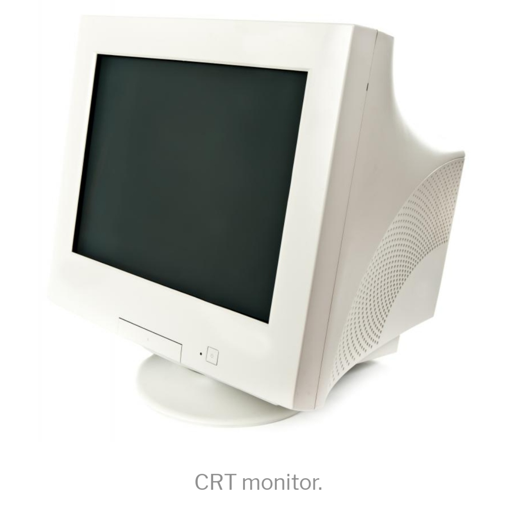
The electron beam repetitively scans the entire front of the tube to “paint” and refresh the image nearly 100 times every second. Computer monitors and televisions that use CRT technology have large, heavy physical casings. The long length between the front screen and the back of the case is necessary to accommodate the length of the vacuum tube.
Cathode-ray tubes were commonly used in televisions and computer monitors throughout the mid-to-late 1900s. Throughout that time, manufacturers continually improved performance and resolution. Most computer monitors in the 1970s only displayed green text on a black screen. By 1990, IBM’s Extended Graphics Array (XGA) display boasted 16.8 million colors in 800 x 600 pixel resolution.
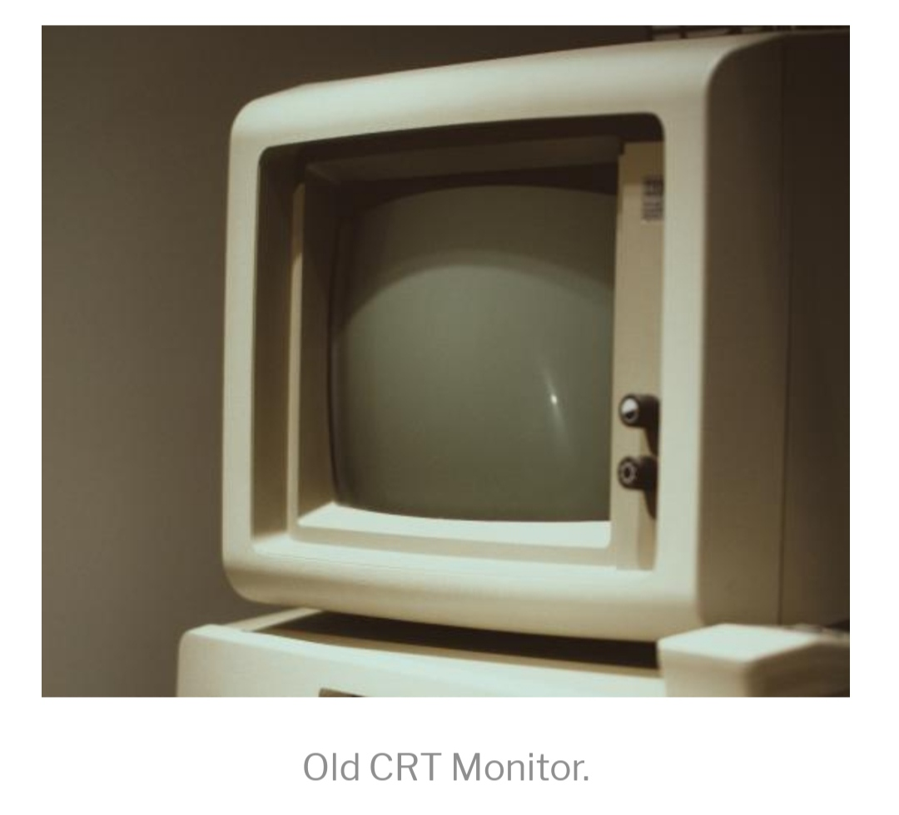
In the early 2000s, advances in technology made flat-panel displays more accessible. These newer display types (LCD, plasma, and OLED) don’t require a large casing and are more energy efficient. Manufacturing costs are lower than for CRT monitors, and flat-panel displays can be made in larger sizes than CRTs. These factors make flat-panel displays far more popular among consumers.
Depending on how old you are, you may remember your parents chiding you for sitting too close to the TV and claiming that it would damage your eyes. However, these fears seem to be largely unsubstantiated. There are some legitimate health and safety concerns with CRT monitors, but none of them link sitting too close to the screen with negative effects on eyesight.
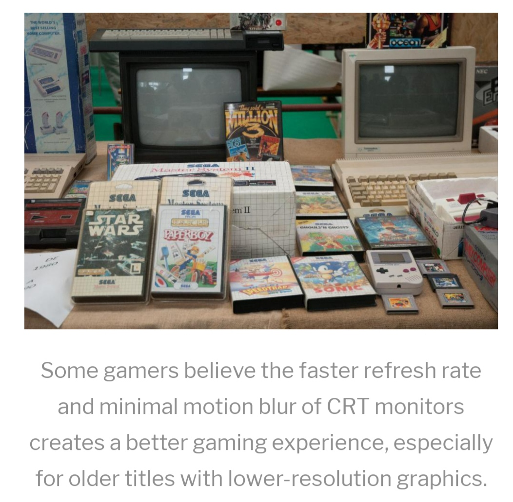
A CRT monitor emits X-ray radiation, but it’s a small amount that’s regulated by the FDA.
There is a significant amount of stored electrical charge in a CRT, even one that’s powered off. Breaking a CRT monitor or attempting to dismantle it without proper tools and training can lead to a severe electrical shock.
Puncturing the vacuum tube will create an implosion that can spray glass shards everywhere.
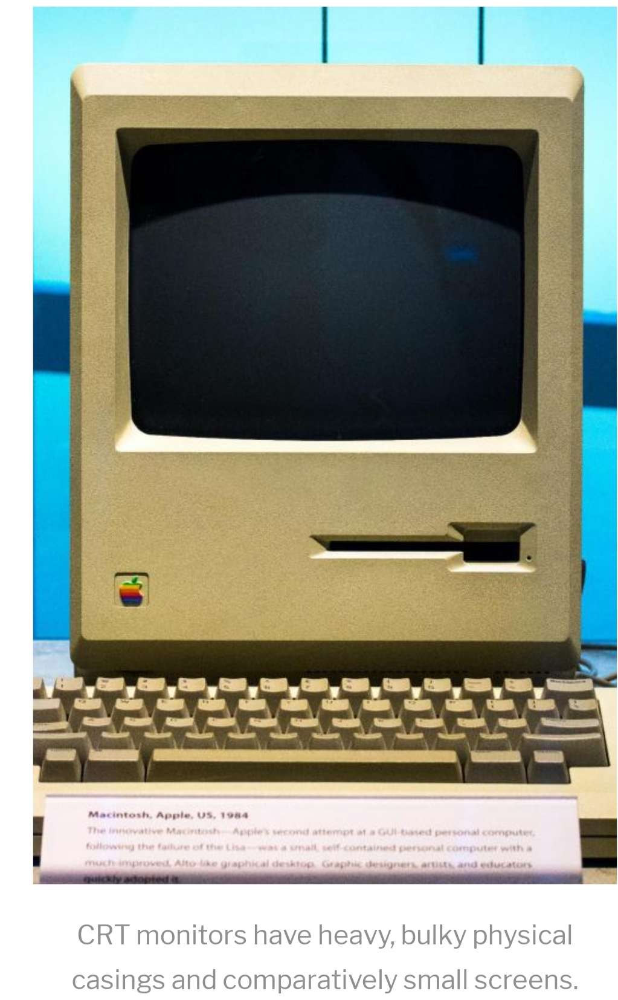
CRT monitors contain toxic materials, including mercury, which can leak out if the monitor breaks.
If you have a CRT monitor you no longer want, it’s not safe to toss it in your trash can. You should contact your local authorities for information on safe disposal methods and/or recycling options.
2] LED Monitors
Short for light-emitting diode monitor, an LED monitor or LED display is a flat screen, flat-panel computer monitor or television. It has a very short depth and is light in terms of weight. The actual difference between this and a typical LCD monitor is the backlighting. The first LCD monitors used CCFL instead of LEDs to illuminate the screen.
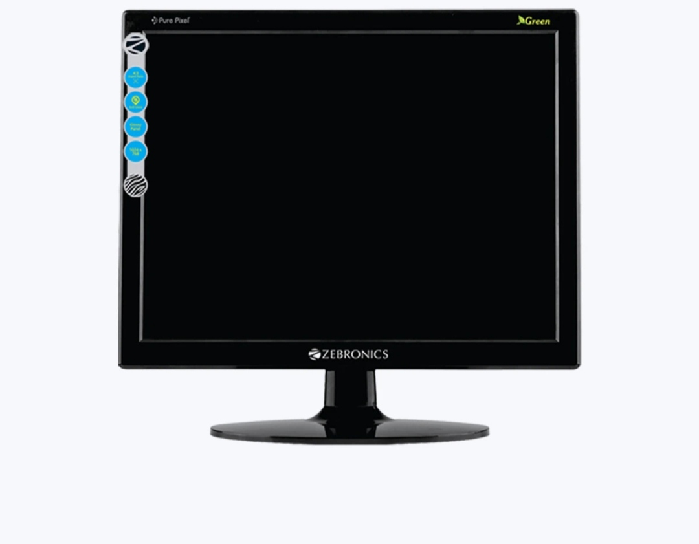
LED monitor advantages
LED monitors offer many benefits compared to those that are CCFL backlit including:
Often less expensive.
Broader dimming range.
Overall more reliable.
They run at a lower temperature, and consume much less power, as few as 20 watts.
Higher dynamic contrast ratio.
Longer lifespan and less environmental impact
.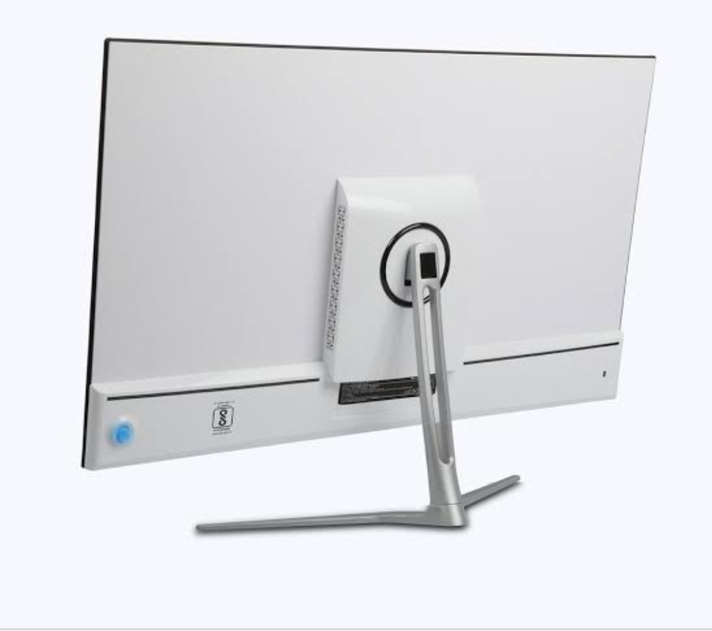
History of LED displays
The first LED display is generally considered to have been developed by James P. Mitchell in 1977. The first LED display prototype was shown to the public at the SEF (Science and Engineering Fair) in Iowa on March 18, 1978. It was shown again at the SEF in Anaheim California on May 8, 1978. The prototype was 1/4-inch thick and received awards from General Motors and NASA.
]LCD Monitors
. A liquid crystal display (LCD) monitor is a computer monitor or display that uses LCD technology to show clear images, and is found mostly in laptop computers and flat panel monitors. This technology has replaced the traditional cathode ray tube (CRT) monitors, which were the previous standard and once were considered to have better picture quality than early LCD variants. With the introduction of better LCD technology and its continuous improvement, LCD is now the clear leader over CRT, in terms of color and picture quality, not to mention capabilities for large resolutions. Also, LCD monitors may be made much more cheaply than CRT monitors.
In Plane Switching (IPS) Panel Technology: These panels are considered to have the best color accuracy, viewing angles and image quality in LCD technology.
Super Plane to Line Switching (PLS): Developed by Samsung, this LCD panel is very similar to the IPS panel but reportedly, it is 10 percent brighter, has wider viewing angles and is cheaper to produce.
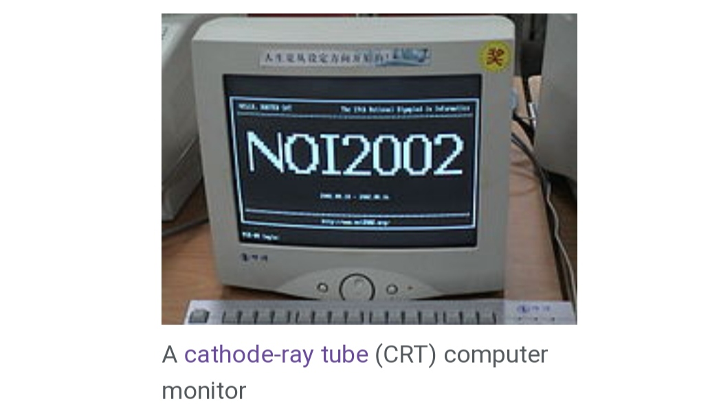
Vertical Alignment (VA) Panel Technology: These panels are considered to be in the middle of TN and IPS technology. Compared to TN panels, they offer wider viewing angles and better color quality but have slower response times. They have higher contrast ratios, compared to the other panels but have a downside, in terms of color shifting, where the brightness display is unevenly distributed throughout the screen.
Twisted Nematic (TN) Panel Technology: These panels are the most commonly used type of panel in LCD technology. They are cheaper and offer faster response times, making them a preferred choice for gamers. The downside is that the viewing angles, contrast ratios and color production are
considered the lowest of LCD panel
Printers
In computing, a printer is a peripheral machine which makes a persistent representation of graphics or text, usually on paper.[1] While most output is human-readable, bar code printers are an example of an expanded use for printers.[2] The different types of printers include 3D printer, inkjet printer, laser printer, thermal printer, and the air printer etc.
The first computer printer designed was a mechanically driven apparatus by Charles Babbage for his difference engine in the 19th century; however, his mechanical printer design was not built until 2000.
The first patented printing mechanism for applying a marking medium to a recording medium or more particularly, to an electrostatic inking apparatus and a method for electrostatically depositing in on controlled areas of a receiving medium was in 1962 by C.R Winston, Teletype, Corporation using continuous inkjet printing. The ink was a red stamp pad ink manufactured by Phillips Process Company of Rochester, NY under the name Clear Print. This patent (US3060429) led to the Teletype Inktronic Printer product delivered to customers in late 1966.[5]
The first electronic printer was the EP-101, invented by Japanese company Epson and released in 1968.
The first commercial printers generally used mechanisms from electric typewriters and Teletype machines. The demand for higher speed led to the development of new systems specifically for computer use. In the 1980s there were daisy wheel systems similar to typewriters, line printers that produced similar output but at much higher speed, and dot matrix systems that could seemix text and graphics but produced relatively low-quality output. The plotter was used for those requiring high quality line art like blueprints.
The introduction of the low-cost laser printer in 1984 with the first HP LaserJet,[8] and the addition of PostScript in next year's Apple LaserWriter, set off a revolution in printing known as desktop publishing.[9] Laser printers using PostScript mixed text and graphics, like dot-matrix printers, but at quality levels formerly available only from commercial typesetting systems. By 1990, most simple printing tasks like fliers and brochures were now created on personal computers and then laser printed; expensive offset.printing systems were being dumped as scrap
The HP Deskjet of 1988 offered the same advantages as a laser printer in terms of flexibility, but produced somewhat lower quality output (depending on the paper) from much less expensive mechanisms. Inkjet systems rapidly displaced dot matrix and daisy wheel printers from the market. By the 2000s high-quality printers of this sort had fallen under the $100 price point and became commonplace.
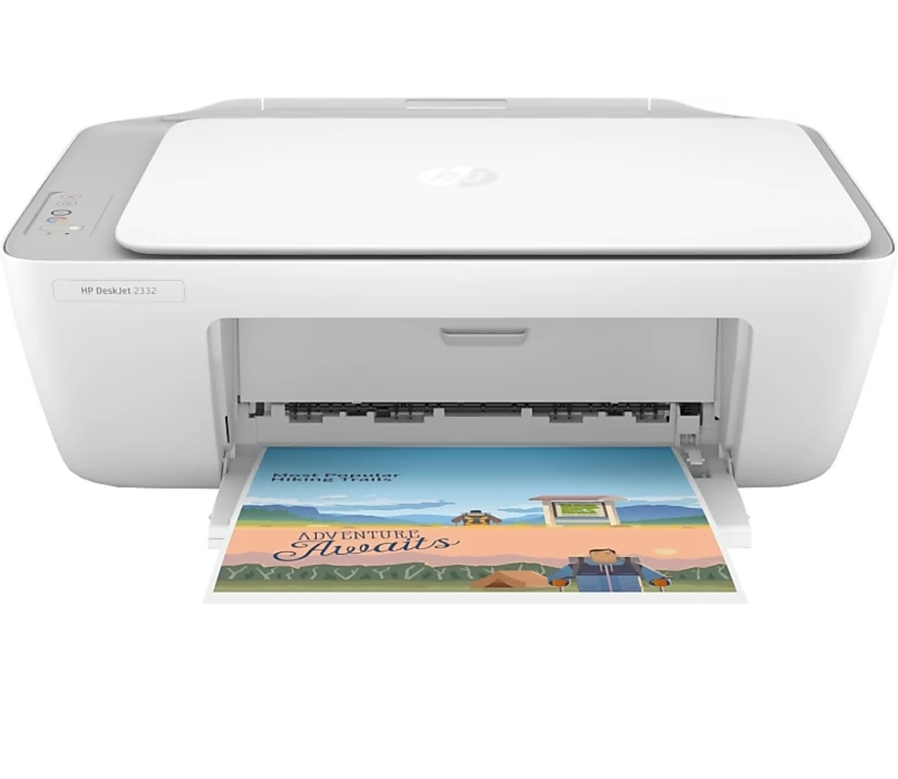
The rapid update of internet email through the 1990s and into the 2000s has largely displaced the need for printing as a means of moving documents, and a wide variety of reliable storage systems means that a "physical backup" is of little benefit today.
Starting around 2010, 3D printing became an area of intense interest, allowing the creation of physical objects with the same sort of effort as an early laser printer required to produce a brochure. These devices are in their earliest stages of development and have not yet become commonplace.[citation needed]
. Personal printers are primarily designed to support individual users, and may be connected to only a single computer. These printers are designed for low-volume, short-turnaround print jobs, requiring minimal setup time to produce a hard copy of a given document. However, they are generally slow devices ranging from 6 to around 25 pages per minute (ppm), and the cost per page is relatively high. However, this is offset by the on-demand convenience. Some printers can print documents stored on memory cards or from digital cameras and scanners.
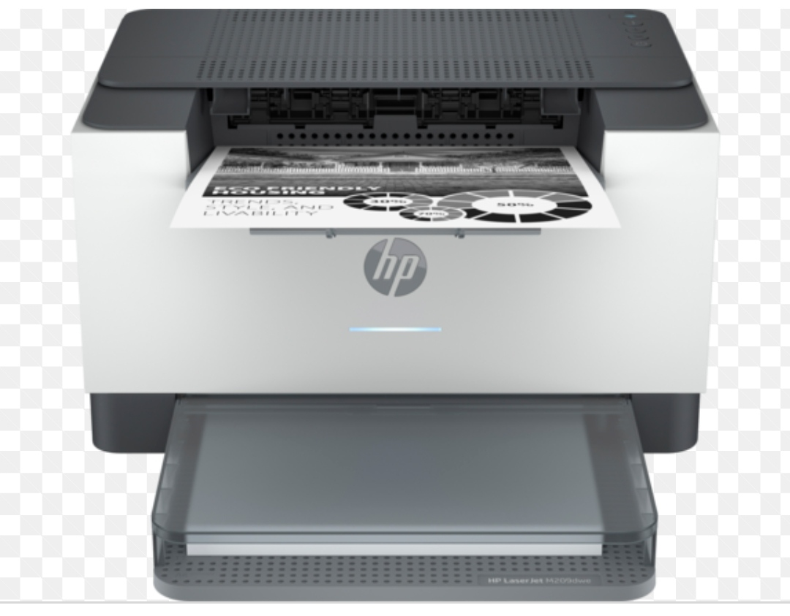
Networked or shared printers are "designed for high-volume, high-speed printing". They are usually shared by many users on a network and can print at speeds of 45 to around 100 ppm.[10] The Xerox 9700 could achieve 120 ppm.
A virtual printer is a piece of computer software whose user interface and API resembles that of a printer driver, but which is not connected with a physical computer printer. A virtual printer can be used to create a file which is an image of the data which would be printed, for archival purposes or as input to another program, for example to create a PDF or to transmit to another system or user.
A barcode printer is a computer peripheral for printing barcode labels or tags that can be attached to, or printed directly on, physical objects. Barcode printers are commonly used to label cartons before shipment, or to label retail items with UPCs or EANs.
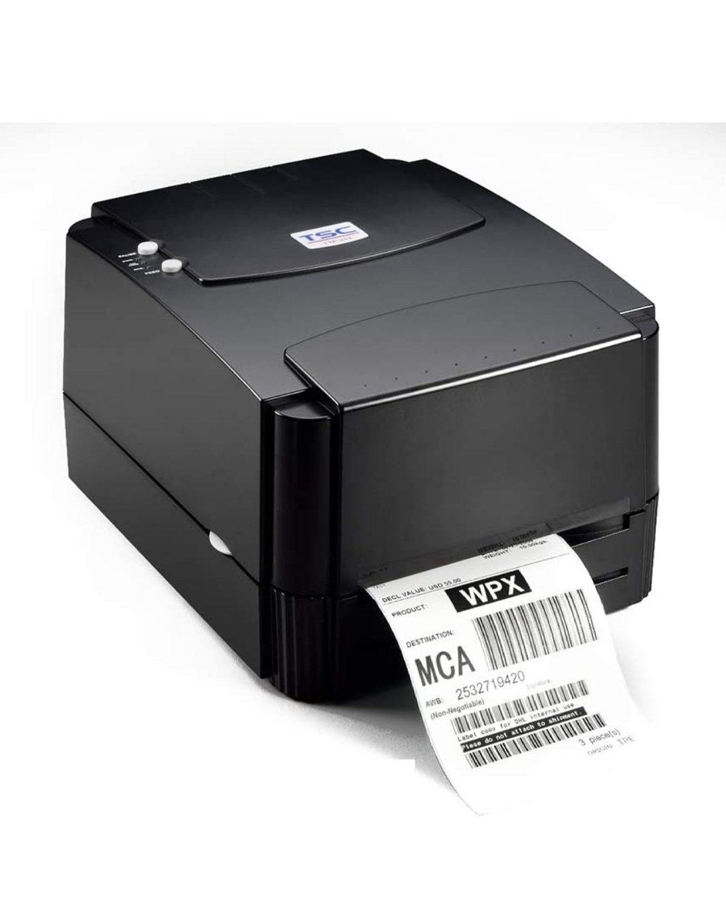
A 3D printer is a device for making a three-dimensional object from a 3D model or other electronic data source through additive processes in which successive layers of material (including plastics, metals, food, cement, wood, and other materials) are laid down under computer control. It is called a printer by analogy with an inkjet printer which produces a two-dimensional document by a similar process of depositing a layer of ink on paper.
. The choice of print technology has a great effect on the cost of the printer and cost of operation, speed, quality and permanence of documents, and noise. Some printer technologies do not work with certain types of physical media, such as carbon paper or transparencies.
A second aspect of printer technology that is often forgotten is resistance to alteration: liquid ink, such as from an inkjet head or fabric ribbon, becomes absorbed by the paper fibers, so documents printed with liquid ink are more difficult to alter than documents printed with toner or solid inks, which do not penetrate below the paper surface.
Cheques can be printed with liquid ink or on special cheque paper with toner anchorage so that alterations may be detected.[11] The machine-readable lower portion of a cheque must be printed using MICR toner or ink. Banks and other clearing houses employ automation equipment that relies on the magnetic flux from these specially printed characters to function properly.
Modern print technology Edit
The following printing technologies are routinely found in modern printers:
Laser printer
A laser printer rapidly produces high quality text and graphics. As with digital photocopiers and multifunction printers (MFPs), laser printers employ a xerographic printing process but differ from analog photocopiers in that the image is produced by the direct scanning of a laser beam across the printer's photoreceptor.
Another toner-based printer is the LED printer which uses an array of LEDs instead of a laser to cause toner adhesion to the print drum.
Liquid ink cartridge from Hewlett-Packard HP 845C inkjet printer
HP Deskjet, an inkjet printer
Inkjet printers operate by propelling variably sized droplets of liquid ink onto almost any sized page. They are the most common type of computer printer used by consumers.
Solid ink
Solid ink printers, also known as phase-change ink or hot-melt ink printers, are a type of thermal transfer printer, graphics sheet printer or 3D printer . They use solid sticks, crayons, pearls or granular ink materials. Common inks are CMYK-colored ink, similar in consistency to candle wax, which are melted and fed into a piezo crystal operated print-head.
A Thermal transfer printhead jets the liquid ink on a rotating, oil coated drum. The paper then passes over the print drum, at which time the image is immediately transferred, or transfixed, to the page. Solid ink printers are most commonly used as color office printers and are excellent at printing on transparencies and other non-porous media. Solid ink is also called phase-change or hot-melt ink was first used by Data Products and Howtek, Inc., in 1984.[12] Solid ink printers can produce excellent results with text and images. Some solid ink printers have evolved to print 3D models, for example, Visual Impact Corporation[13] of Windham, NH was started by retired Howtek employee, Richard Helinski whose 3D patents US4721635 and then US5136515 was licensed to Sanders Prototype, Inc., later named Solidscape, Inc. Acquisition and operating costs are similar to laser printers.
Drawbacks of the technology include high energy consumption and long warm-up times from a cold state. Also, some users complain that the resulting prints are difficult to write on, as the wax tends to repel inks from pens, and are difficult to feed through automatic document feeders, but these traits have been significantly reduced in later models. This type of thermal transfer printer is only available from one manufacturer, Xerox, manufactured as part of their Xerox Phaser office printer line. Previously, solid ink printers were manufactured by Tektronix, but Tektronix sold the printing business to Xerox in 2001.
Dye-sublimation printer
A disassembled dye sublimation cartridge
A dye-sublimation printer (or dye-sub printer) is a printer that employs a printing process that uses heat to transfer dye to a medium such as a plastic card, paper, or canvas. The process is usually to lay one colour at a time using a ribbon that has colour panels. Dye-sub printers are intended primarily for high-quality colour applications, including colour photography; and are less well-suited for text. While once the province of high-end print shops, dye-sublimation printers are now increasingly used as dedicated consumer photo printers.
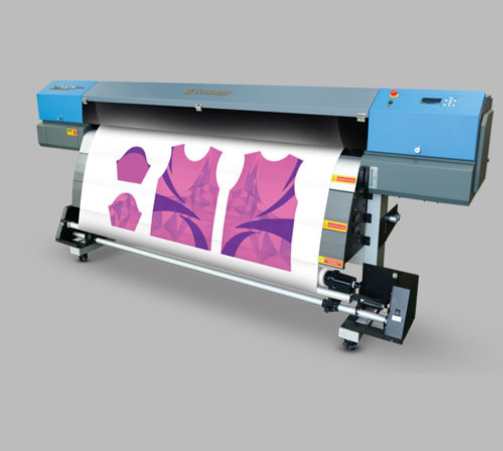
Thermal Printer
Receipt printer printing a Twitter timeline
Thermal printers work by selectively heating regions of special heat-sensitive paper. Monochrome thermal printers are used in cash registers, ATMs, gasoline dispensers and some older inexpensive fax machines. Colours can be achieved with special papers and different temperatures and heating rates for different colours; these coloured sheets are not required in black-and-white output. One example is Zink (a portmanteau of "zero ink").
Epson MX-80, a popular model of dot-matrix printer in use for many years
The following technologies are either obsolete, or limited to special applications though most were, at one time, in widespread use.
Impact printers
Impact printers rely on a forcible impact to transfer ink to the media. The impact printer uses a print head that either hits the surface of the ink ribbon, pressing the ink ribbon against the paper (similar to the action of a typewriter), or, less commonly, hits the back of the paper, pressing the paper against the ink ribbon (the IBM 1403 for example). All but the dot matrix printer rely on the use of fully formed characters, letterforms that represent each of the characters that the printer was capable of printing.
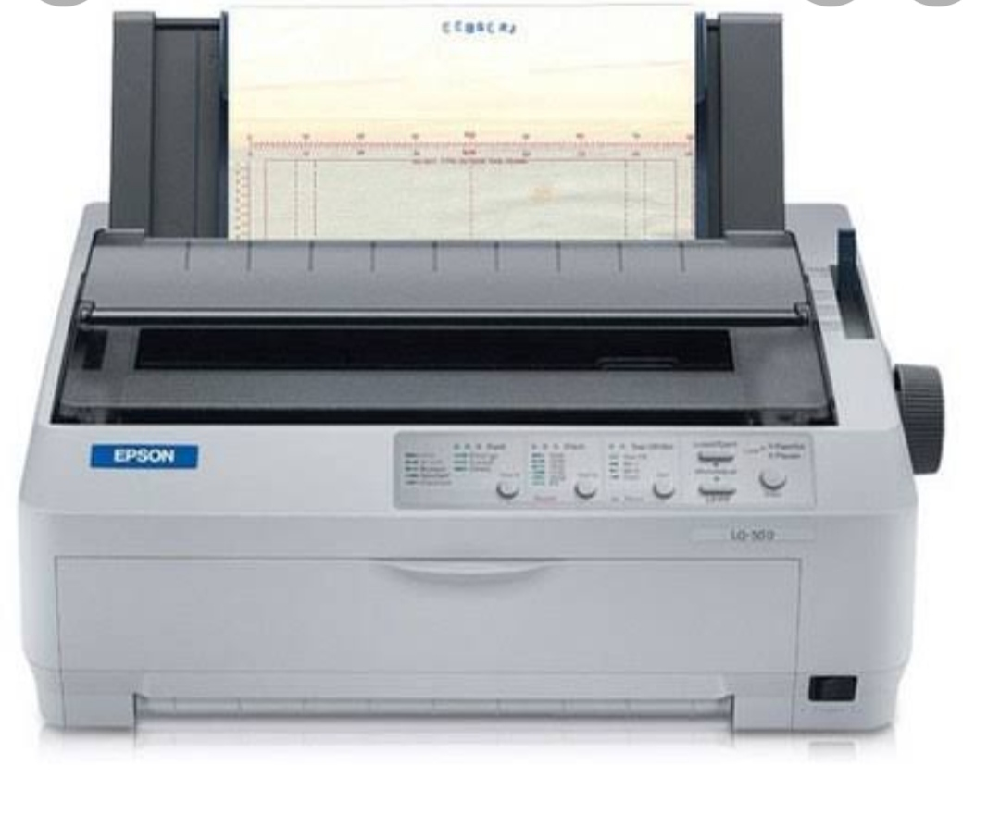
In addition, most of these printers were limited to monochrome, or sometimes two-color, printing in a single typeface at one time, although bolding and underlining of text could be done by "overstriking", that is, printing two or more impressions either in the same character position or slightly offset. Impact printers varieties include typewriter-derived printers, teletypewriter-derived printers, daisywheel printers, dot matrix printers, and line printers. Dot-matrix printers remain in common use in businesses where multi-part forms are printed. An overview of impact printing[14] contains a detailed description of many of the technologies used.
Typewriter-derived printers
Several different computer printers were simply computer-controllable versions of existing electric typewriters. The Friden Flexowriter and IBM Selectric-based printers were the most-common examples. The Flexowriter printed with a conventional typebar mechanism while the Selectric used IBM's well-known "golf ball" printing mechanism. In either case, the letter form then struck a ribbon which was pressed against the paper, printing one character at a time. The maximum speed of the Selectric printer (the faster of the two) was 15.5 characters per second.
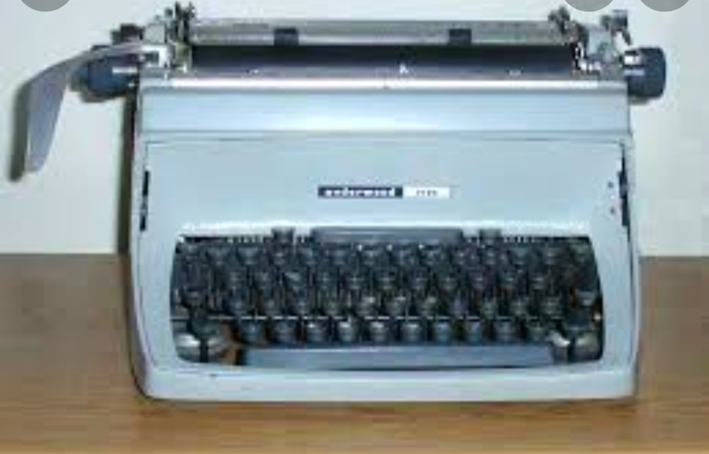
Teleprinter
The common teleprinter could easily be interfaced with the computer and became very popular except for those computers manufactured by IBM. Some models used a "typebox" that was positioned, in the X- and Y-axes, by a mechanism, and the selected letter form was struck by a hammer. Others used a type cylindrical.in a similar way as the Selectric typewriters used their type ball. In either case, the letter form then struck a ribbon to print the letterform. Most teleprinters operated at ten characters per second although a few achieved 15 CPS.
Daisy wheel printers
"daisy wheel" print element
Main article: Daisy wheel printer
Daisy wheel printers operate in much the same fashion as a typewriter. A hammer strikes a wheel with petals, the "daisy wheel", each petal containing a letter form at its tip. The letter form strikes a ribbon of ink, depositing the ink on the page and thus printing a character. By rotating the daisy wheel, different characters are selected for printing. These printers were also referred to as letter-quality printers because they could produce text which was as clear and crisp as a typewriter. The fastest letter-quality printers printed at 30 characters per second.
Dot matrix printer
Sample output from 9-pin dot matrix printer (one character expanded to show detail)
The term dot matrix printer is used for impact printers that use a matrix of small pins to transfer ink to the page.[15] The advantage of dot matrix over other impact printers is that they can produce graphical images in addition to text; however the text is generally of poorer quality than impact printers that use letterforms (type).
Dot-matrix printers can be broadly divided into two major classes:
Ballistic wire printers
Stored energy printers
Dot matrix printers can either be character-based or line-based (that is, a single horizontal series of pixels across the page), referring to the configuration of the print head.
In the 1970s and '80s, dot matrix printers were one of the more common types of printers used for general use, such as for home and small office use. Such printers normally had either 9 or 24 pins on the print head (early 7 pin printers also existed, which did not print descenders). There was a period during the early home computer era when a range of printers were manufactured under many brands such as the Commodore VIC-1525 using the Seikosha Uni-Hammer system.
This used a single solenoid with an oblique striker that would be actuated 7 times for each column of 7 vertical pixels while the head was moving at a constant speed. The angle of the striker would align the dots vertically even though the head had moved one dot spacing in the time. The vertical dot position was controlled by a synchronized longitudinally ribbed platen behind the paper that rotated rapidly with a rib moving vertically seven dot spacings in the time it took to print one pixel column.[16] 24-pin print heads were able to print at a higher quality and started to offer additional type styles and were marketed as Near Letter Quality by some vendors. Once the price of inkjet printers dropped to the point where they were competitive with dot matrix printers, dot matrix printers began to fall out of favour for general use.
Some dot matrix printers, such as the NEC P6300, can be upgraded to print in colour. This is achieved through the use of a four-colour ribbon mounted on a mechanism (provided in an upgrade kit that replaces the standard black ribbon mechanism after installation) that raises and lowers the ribbons as needed. Colour graphics are generally printed in four passes at standard resolution, thus slowing down printing considerably. As a result, colour graphics can take up to four times longer to print than standard monochrome graphics, or up to 8-16 times as long at high resolution mode.
Dot matrix printers are still commonly used in low-cost, low-quality applications such as cash registers, or in demanding, very high volume applications like invoice printing. Impact printing, unlike laser printing, allows the pressure of the print head to be applied to a stack of two or more forms to print multi-part documents such as sales invoices and credit card receipts using continuous stationery with carbonless copy paper. It also has security advantages as ink impressed into a paper matrix by force is harder to erase invisibly. Dot-matrix printers were being superseded even as receipt printers after the end of the twentieth century.
Line printers
Main article: Line printer
Line printers print an entire line of text at a time. Four principal designs exist.
drum printer
Drum printers, where a horizontally mounted rotating drum carries the entire character set of the printer repeated in each printable character position. The IBM 1132 printer is an example of a drum printer.[17] Drum printers are also found in adding machines and other numeric printers (POS), the dimensions are compact as only a dozen characters need to be supported.[18]
IBM 1403 line printer
Chain or train printers, where the character set is arranged multiple times around a linked chain or a set of character slugs in a track traveling horizontally past the print line. The IBM 1403 is perhaps the most popular and comes in both chain and train varieties. The band printer is a later variant where the characters are embossed on a flexible steel band. The LP27 from Digital Equipment Corporation is a band printer.
Bar printers, where the character set is attached to a solid bar that moves horizontally along the print line, such as the IBM 1443.[19]
A fourth design, used mainly on very early printers such as the IBM 402, features independent type bars, one for each printable position. Each bar contains the character set to be printed. The bars moves vertically to position the character to be printed in front of the print hammer.[20]
In each case, to print a line, precisely timed hammers strike against the back of the paper at the exact moment that the correct character to be printed is passing in front of the paper. The paper presses forward against a ribbon which then presses against the character form and the impression of the character form is printed onto the paper. Each system could have slight timing issues, which could cause minor misalignment of the resulting printed characters. For drum or typebar printers, this appeared as vertical misalignment, with characters being printed slightly above or below the rest of the line. In chain or bar printers, the misalignment was horizontal, with printed characters being crowded closer together or farther apart. This was much less noticeable to human vision than vertical misalignment, where characters seemed to bounce up and down in the line, so they were considered as higher quality print.
Comb printers
Comb printers, also called line matrix printers, represent the fifth major design. These printers are a hybrid of dot matrix printing and line printing. In these printers, a comb of hammers prints a portion of a row of pixels at one time, such as every eighth pixel. By shifting the comb back and forth slightly, the entire pixel row can be printed, continuing the example, in just eight cycles.
The paper then advances, and the next pixel row is printed. Because far less motion is involved than in a conventional dot matrix printer, these printers are very fast compared to dot matrix printers and are competitive in speed with formed-character line printers while also being able to print dot matrix graphics. The Printronix P7000 series of line matrix printers are still manufactured as of 2013.
Line printers are the fastest of all impact printers and are used for bulk printing in large computer centres. A line printer can print at 1100 lines per minute or faster, frequently printing pages more rapidly than many current laser printers. On the other hand, the mechanical components of line printers operate with tight tolerances and require regular preventive maintenance (PM) to produce a top quality print. They are virtually never used with personal computers and have now been replaced by high-speed laser printers. The legacy of line printers lives on in many operating systems, which use the abbreviations "lp", "lpr", or "LPT" to refer to printers
Liquid ink electrostatic printers
Liquid ink electrostatic printers use a chemical coated paper, which is charged by the print head according to the image of the document.[21] The paper is passed near a pool of liquid ink with the opposite charge. The charged areas of the paper attract the ink and thus form the image. This process was developed from the process of electrostatic copying.[22] Color reproduction is very accurate, and because there is no heating the scale distortion is less than ±0.1%. (All laser printers have an accuracy of ±1%.)
Worldwide, most survey offices used this printer before color inkjet plotters become popular. Liquid ink electrostatic printers were mostly available in 36 to 54 inches (910 to 1,370 mm) width and also 6 color printing. These were also used to print large billboards. It was first introduced by Versatec, which was later bought by Xerox. 3M also used to make these printers.[23]
Plotter
A Calcomp 565 drum plotter
Pen-based plotters were an alternate printing technology once common in engineering and architectural firms. Pen-based plotters rely on contact with the paper (but not impact, per se) and special purpose pens that are mechanically run over the paper to create text and images. Since the pens output continuous lines, they were able to produce technical drawings of higher resolution than was achievable with dot-matrix technology.[24] Some plotters used roll-fed paper, and therefore had a minimal restriction on the size of the output in one dimension. These plotters were capable of producing quite sizable drawings.
Modem
A modulator-demodulator, or simply modem, is a computer hardware device that converts data from a digital format into a format suitable for an analog such as telephone or radio. A modem transmits data by modulating one or more carrier wave signals to encode digital information, while the receiver demodulates the signal to recreate the original digital information. The goal is to produce a electrical signal that can be transmitted easily and decoded reliably. Modems can be used with almost any means of transmitting analog signals, from light-emitting diodes to radio.
Acoustic coupler modems used a telephone handset as the audio medium, with the user dialing the desired number and then pressing the handset into the modem to complete the connection. These systems generally operated at 300 bits per second speeds.
Early modems were devices that used audible sounds suitable for transmission over traditional telephone systems and leased lines. These generally operated at 110 or 300 bits per second (bit/s), and the connection between devices was normally manual, using an attached telephone handset. By the 1980s, higher speeds of 1200 and 2400 bit/s were being released, and modems working on radio and other systems were available. As device sophistication grew rapidly in the late 1990s, telephone-based modems quickly exhausted the available Bandwidth, reaching the ultimate standard of 56 kbit/s.
The rise of public use of the internet during the late 1990s led to demands for much higher performance, leading to the move away from audio-based systems to entirely new encodings on cable television lines and short-range signals in subcarriers on telephone lines. The move to cellular telephones, especially in the late 1990s and the emergence of smartphones in the 2000s led to the development of ever-faster radio-based systems. Today, modems are ubiquitous and largely invisible, included in almost every mobile computing device in one form or another, and generally capable of speeds on the order of tens or hundreds of megabytes per second.
Modems are frequently classified by the maximum amount of data they can send in a given unit of time, usually expressed in bits per second (symbol bit/s, sometimes abbreviated "bps") or rarely in bytes per second (symbol B/s). Modern broadband modems are typically described in megabits.
Historically, modems were often classified by their symbol rate, measured in baud. The baud unit denotes symbols per second, or the number of times per second the modem sends a new signal. For example, the ITU V.21 standard used audio frequency-shift keying with two possible frequencies, corresponding to two distinct symbols (or one bit per symbol), to carry 300 bits per second using 300 baud. By contrast, the original ITU V.22 standard, which could transmit and receive four distinct symbols (two bits per symbol), transmitted 1,200 bits by sending 600 symbols per second (600 baud) using phase-shift keying.
Many modems are variable-rate, permitting them to be used over a medium with less than ideal characteristics, such as a telephone line that is of poor quality or is too long. This capability is often adaptive so that a modem can discover the maximum practical transmission rate during the connect phase, or during operation.
Collection of modems once used in Australia, including dial-up, DSL, and cable modems.
Modems grew out of the need to connect teleprinters over ordinary phone lines instead of the more expensive leased lines which had previously been used for current loop–based teleprinters and automated telegraphs. The earliest devices that satisfy the definition of a modem may be the multiplexers used by news wire services in the 1920s.[1]
In 1941, the Allies developed a voice encryption system called SIGSALY which used a vocoder to digitize speech, then encrypted the speech with one-time pad and encoded the digital data as tones using frequency shift keying. This was also a digital modulation technique, making this an early modem.[2]
Commercial modems largely did not become available until the late 1950s, when the rapid development of computer technology created demand for a method of connecting computers together over long distances, resulting in the Bell Company and then other businesses producing an increasing number of computer modems for use over both switched and leased telephone lines.
Later developments would produce modems that operated over cable television lines, power lines, and various radio technologies, as well as modems that achieved much higher speeds over telephone lines.
Projector
. A projector or image projector is an optical device that projects an image (or moving images) onto a surface, commonly a projection screen. Most projectors create an image by shining a light through a small transparent lens, but some newer types of projectors can project the image directly, by using lasers. A virtual retinal display, or retinal projector, is a projector that projects an image directly on the retina instead of using an external projection screen.
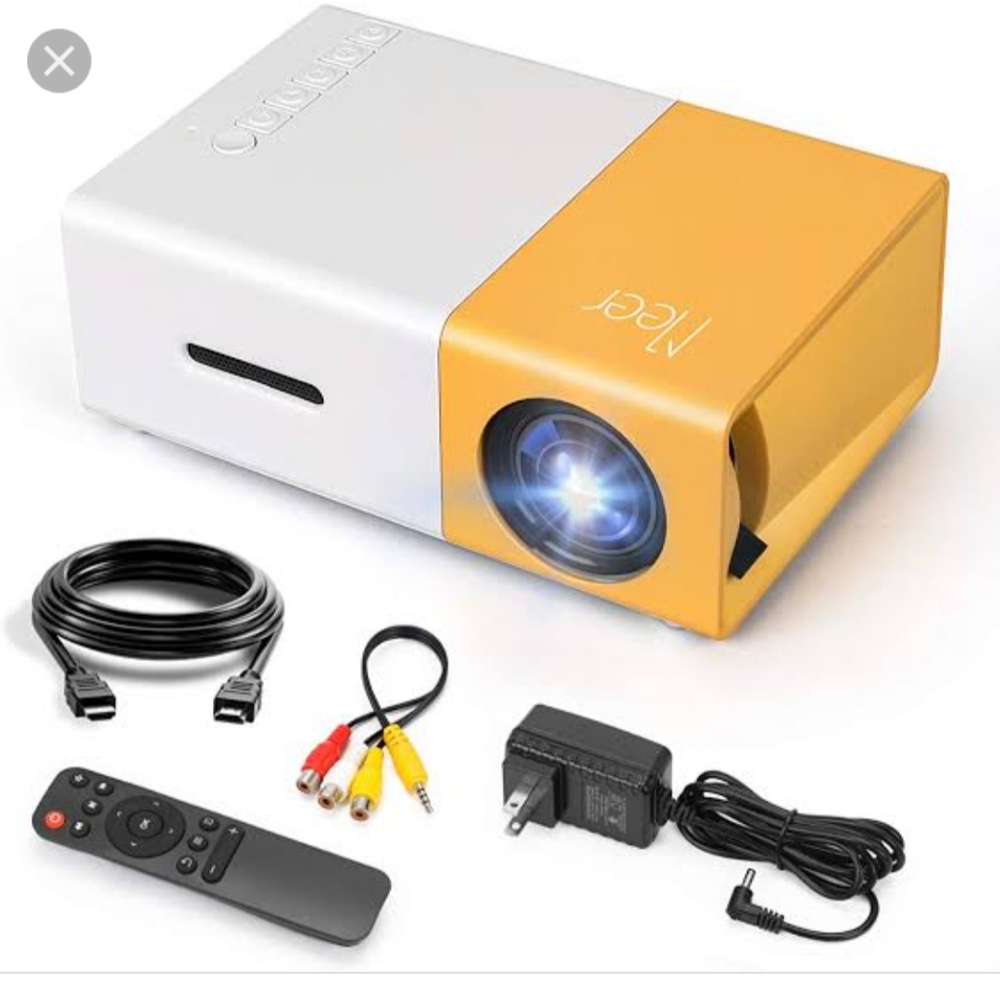
Acer projector, 2012
DLP type home theatre projector in use
The most common type of projector used today is called a video projector. Video projectors are digital replacements for earlier types of projectors such as slide projectors and overhead projectors. These earlier types of projectors were mostly replaced with digital video projectors throughout the 1990s and early 2000s, but old analog projectors are still used at some places. The newest types of projectors are handheld projectors that use lasers or LEDs to project images. Their projections are hard to see if there is too much ambient light.[citation needed]
Movie theaters used a type of projector called a movie projector, nowadays mostly replaced with digital cinema video projectors.[1]
Bio-metric devices
A biometric device is a security identification and authentication device. Such devices use automated methods of verifying or recognising the identity of a living person based on a physiological or behavioral characteristic. These characteristics include fingerprints, facial images, iris and voice recognition.[1]
Iris scanner in action to identify people
History
Biometric devices have been in use for thousands of years. Non-automated biometric devices have in use since 500 BC,[2] when ancient Babylonians would sign their business transactions by pressing their fingertips into clay tablets.
Automation in biometric devices was first seen in the 1960s.[3] The Federal Bureau of Investigation (FBI) in the 1960s, introduced the Indentimat, which started checking for fingerprints to maintain criminal records. The first systems measured the shape of the hand and the length of the fingers. Although discontinued in the 1980s, the system set a precedent for future Biometric Devices.
The characteristic of the human body is used to access information by the users. According to these characteristics, the sub-divided groups are:
Chemical biometric devices:
Analyses the segments of the DNA to grant access to the users.
Visual biometric de
Analyses the visual features of the humans to grant access which includes iris recognition, face recognition, Finger recognition, and Retina Recognition.
Behavioral biometric devices: Analyses the Walking Ability and Signatures (velocity of sign, width of sign, pressure of sign) distinct to every human.
factory biometric devices
Analyses the odor to distinguish between varied users.
Auditory biometric devices:
Analyses the voice to determine the identity of a speaker for accessing control.
Uses
Personal signature verification systems Edit
This is one of the most highly recognised[6] and acceptable biometrics in corporate surroundings. This verification has been taken one step further by capturing the signature while taking into account many parameters revolving around this like the pressure applied while signing, the speed of the hand movement and the angle made between the surface and the pen used to make the signature. This system also has the ability to learn from users as signature styles vary for the same user. Hence by taking a sample of data, this system is able to increase its own accuracy.
Iris recognition system
Iris recognition involves the device scanning the pupil of the subject and then cross referencing that to data stored on the database. It is one of the most secure forms of authentication, as while fingerprints can be left behind on surfaces, iris prints are extremely hard to be stolen. Iris recognition is widely applied by organisations dealing with the masses, one being the Aadhaar identification carried out by the Government of India to keep records of its population. The reason for this is that iris recognition makes use of iris prints of humans, which hardly evolve during one's lifetime and are extremely stable.
Problems with present day biometric devices Edit
Biometric spoofing
Using fine powder and a brush to reveal and copy fingerprints
Biometric spoofing is a method of fooling[7] a biometric identification management system, where a counterfeit mold is presented in front of the biometric scanner. This counterfeit mold emulates the unique biometric attributes of an individual so as to confuse the system between the artifact and the real biological target and gain access to sensitive data/materials.
One such high-profile case of Biometric spoofing came to the limelight when it was found that German Defence Minister, Ursula von der Leyen's fingerprint had been successfully replicated[8] by Chaos Computer Club. The group used high quality camera lenses and shot images from 6 feet away. They used a professional finger software and mapped the contours of the Ministers thumbprint. Although progress has been made to stop spoofing. Using the principle of pulse oximetry[9]- the liveliness of the test subject is taken into account by measure of blood oxygenation and the heart rate.
This reduces attacks like the ones mentioned above, although these methods aren't commercially applicable as costs of implementation are high. This reduces their real world application and hence makes biometrics insecure until these methods are commercially viable.
Accuracy
Biometric Island examining facial image 2D and 3D, voice timbre, and verifying handwritten signature
Accuracy is a major issue with biometric recognition. Passwords are still extremely popular, because a password is static in nature, while biometric data can be subject to change (such as one's voice becoming heavier due to puberty, or an accident to the face, which could lead to improper reading of facial scan data). When testing voice recognition as a substitute to PIN-based systems, Barclays reported[10] that their voice recognition system is 95 percent accurate. This statistic means that many of its customers' voices might still not be recognised even when correct. This uncertainty revolving around the system could lead to slower adoption of biometric devices, continuing the reliance of traditional password-based methods.